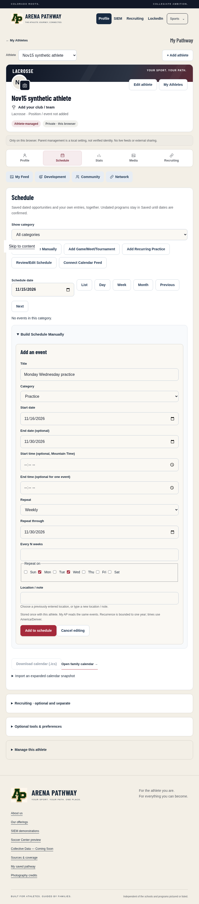
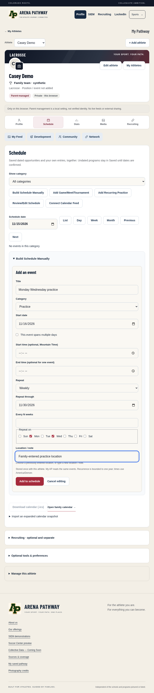
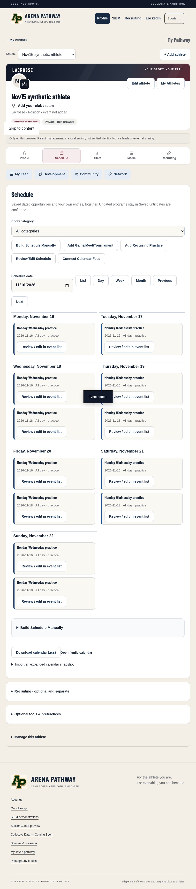
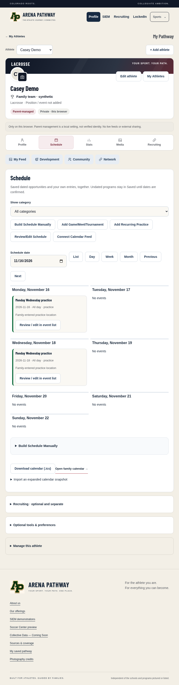
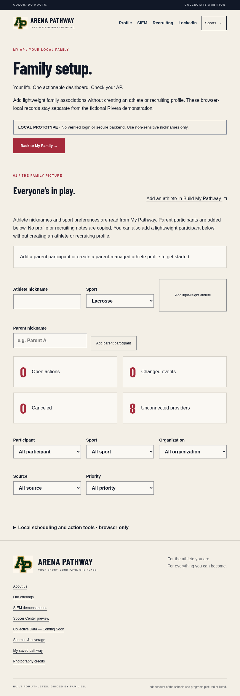
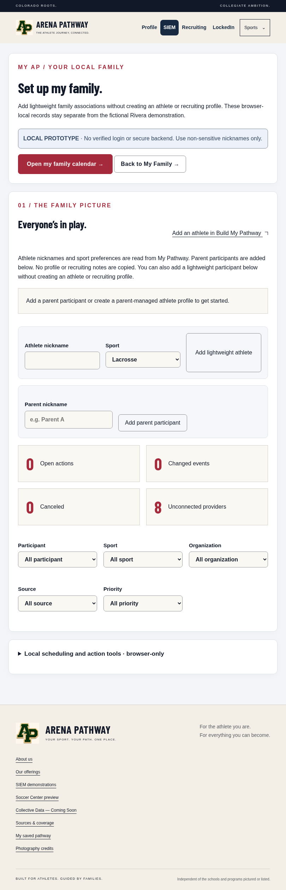
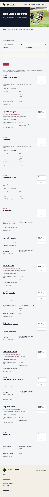
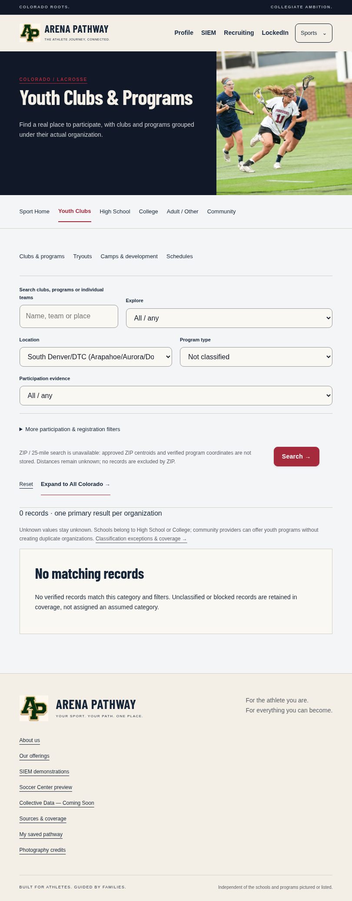
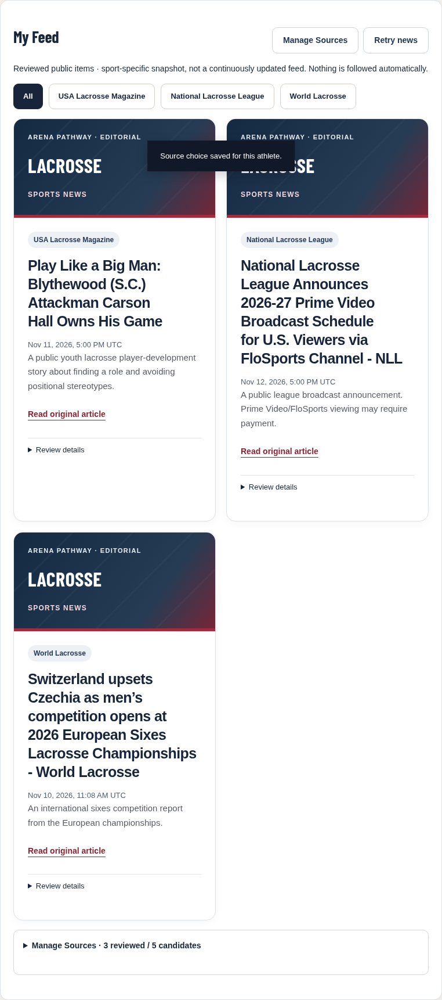
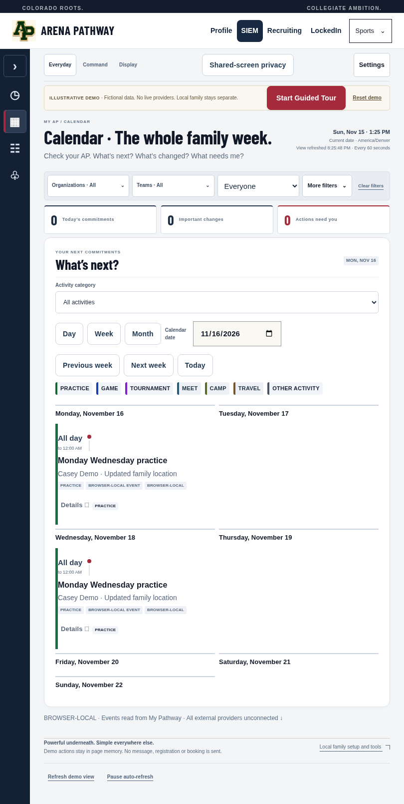

Coach-facing card — actual product-family reference


AP retains its collegiate design and local-only approval. Secure SC coach-link infrastructure is not imported. Authenticated parent portal redirects to sign-in.
Actual rendered browser captures, 810×1080 iPad viewport unless labeled otherwise. Full-page captures extend below that viewport. Fictional QA records only. Acceptance report. This HTML is a local review artifact, not a hosted deployment.








AP retains its collegiate design and local-only approval. Secure SC coach-link infrastructure is not imported. Authenticated parent portal redirects to sign-in.

